2020/08/07
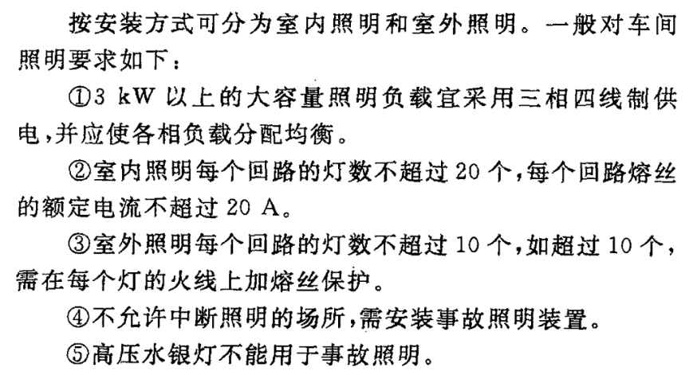
原创作者：张向荣
同学们，大家好，今天来讲讲电路图纸中的系统图。
系统图是用来表明供电线路与各设备工作原理及其作用，相互间关系的一种表达方式。
与土建图纸不同，安装图纸主要是用各种规范性的符号代替，所以顺便结合前几篇我们所学习的知识，认清各自代表什么意思。
一、电气系统图
系统图是安装图纸中必不可少的一部分，电气系统图即电气系统控制图。是用来表明供电线路与各设备工作原理及其作用，相互间关系的一种表达方式。
如下图，就是一个系统图。
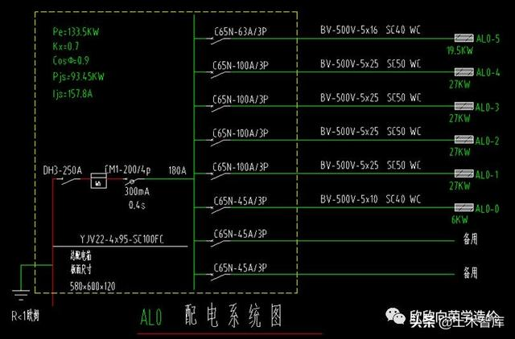
图1
同学们看到图纸，一开始肯定有些懵，信息很多，我们一点点从头开始讲解。
还记得一开始咱们讲解的照明系统的组成吗？
系统图其实就是把这些组成部分详细表示出来。
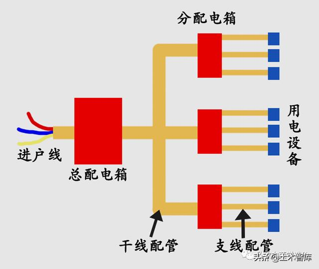
图2
首先把系统图按大块分开。
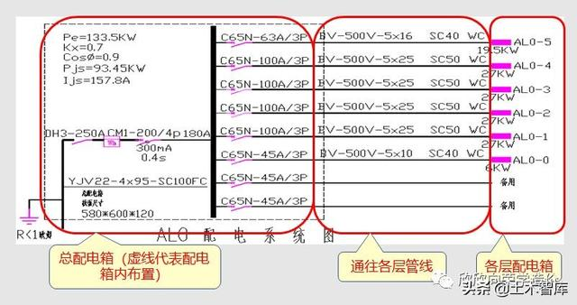
图3
系统图的展现的就是一个建筑配电箱的接线情况，如何布线通往各处的分配电箱以及其它线路。
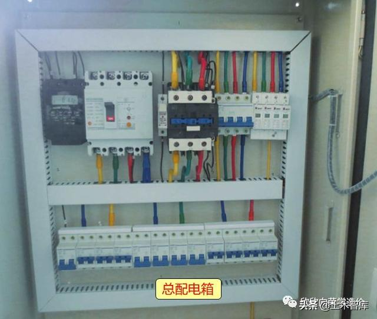
图4
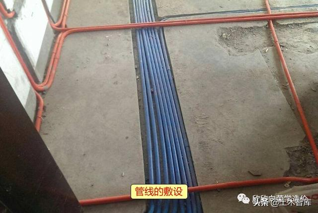
图5
二、系统图符号识别
系统图是进户线→总配电箱→干管→分配电箱→支管→用电设备的过程。原理大家应该都明白了，但是还是看不懂。
原因安装图纸都是用符号来表示，对于零基础来说，这些就是天书。这时就要用到前面我们学习的识图知识，不知道的，先看看前面的安装文章。
1、总配电箱尺寸（重点）
电气安装上的字母符号大概有3000多个，记，肯定是记不住，只要了解常见的重要的字母符号示意也就可以了。
安装图纸都会给图示表，如图6所示。看不明的找图示就可以了。
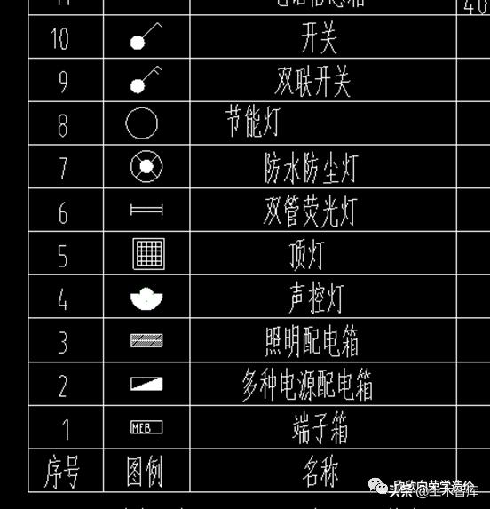
图6
首先找到总配电箱的尺寸，如图7所示。
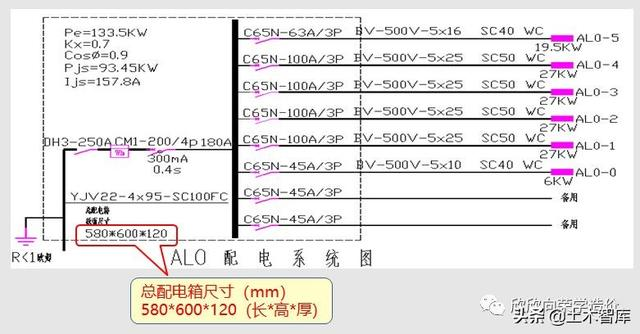
图7
580*600*120
是总配电箱尺寸
580*600*120（长*高*厚）
配电箱名称：AL0
2、总配电箱内电气原件
配电箱基本上都是购买的成品，算量时计算个数即可，箱内元器件大家大概了解就行，不用刻意记忆。
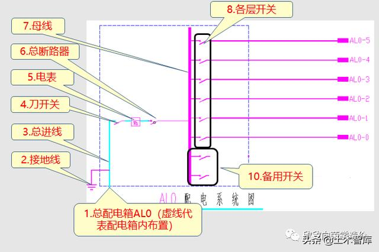
图8
3、进线电缆（重点）
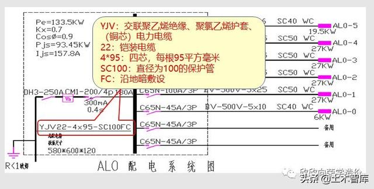
图9
前面在讲电线配管时，重点讲了它们的符号识别。现在拿来实践一下，如果你还是认不清，说明前面学习的还是不扎实。
YJV22-4*95-SC100FC
YJV：交联聚乙烯绝缘、聚氯乙烯护套、（铜芯）电力电缆
22：铠装电缆
4*95：四芯，每根95平方毫米
SC100：直径为100mm的焊接钢管
FC：沿地暗敷设
常见电线表示方法
L——铝
T——铜（省略）
J——交合
Q——轻型
R——软型
X——镀锌
J——加强型（第二个J表示含义）
G——钢
B——第一次出现，表示布线；第二次出现，表示平型
V——第一次出现，表示聚氯乙烯（塑料的）绝缘；第二次出现，表示聚氯乙烯护套
L——线芯为铝芯。若没有用L表示，就是铜芯
F——复合型
R——软线
P——屏蔽
S——双绞
X——绝缘橡胶
NH——耐火
ZR——阻燃
常见电缆表示方法
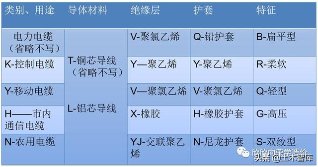
图10
铠装电缆表示方法
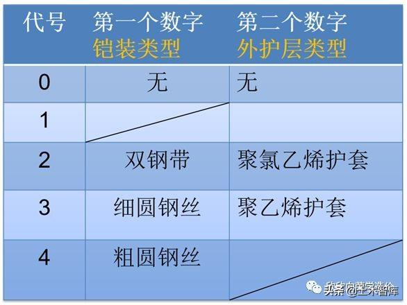
图11
常见的敷设表示方法：
DB-直埋
FC-地板或地面下敷设
WE-沿墙明敷
WC-暗敷在墙内
CE-沿天棚或顶板面敷设
CC-暗敷设在屋面或顶板内
TC-电缆沟BC-暗敷在梁内
CLC-暗敷在柱内
SR-沿钢索
BE-沿屋架，梁
AB-沿或跨梁（屋架）敷设
AC-沿或跨柱敷设
SCE-吊顶内敷设
4、进线开关
总配电箱进线开关，表达及参数如图12所示。
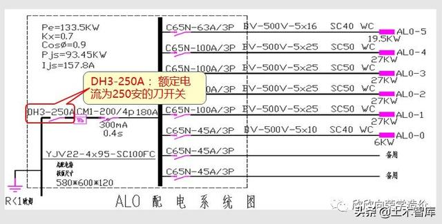
图12
5、总断路器
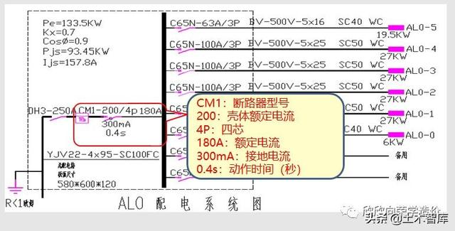
图13
断路器是指能够关合、承载和开断正常回路条件下的电流并能在规定的时间内关合、承载和开断异常回路条件下的电流的开关装置。简单理解就是总开关。简单了解即可。
CM1：断路器型号
200：壳体额定电流
4P：四芯
180A：额定电流
300mA：接地电流
0.4s：动作时间（秒）
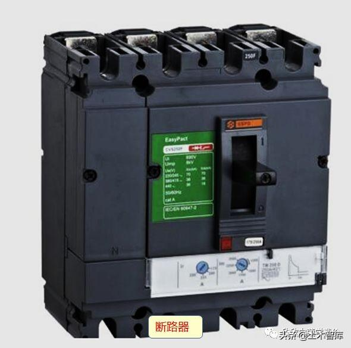
图14
6、设计指标
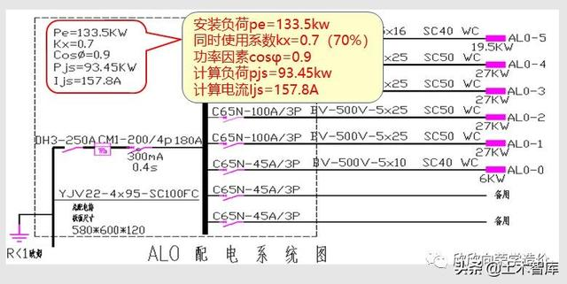
图15
设计指标一般标注左上角，其含义如图17所示，理解不了也没有关系，对做预算没有什么用，知道是设计指标就行。
安装负荷pe=133.5kw
同时使用系数kx=0.7（70％）
功率因素cosφ=0.9
计算负荷pjs=93.45kw
计算电流Ijs=157.8A
7、支路线管及配电箱（重点）
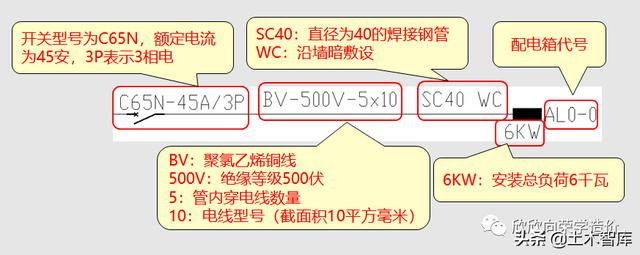
图16
同样支路的配线管，配线需要重点记忆了。
由于配电箱算个数，内部参数意义不大，但是配管，配线采用什么材质，什么铺设方式，导线直径等，都是要我们算量时要考虑的。以及通往哪个分配电箱。
BV：聚氯乙烯铜线
500V：绝缘等级500伏
5：管内穿电线数量
10：电线型号（截面积10平方毫米）
SC40：直径为40的焊接钢管
WC：沿墙暗敷设
三、分配电箱系统图
分配电箱的系统图同理，非常好理解了。总配电箱分往各层的分配电箱，分配电箱供应控制各个回路的电气设备。
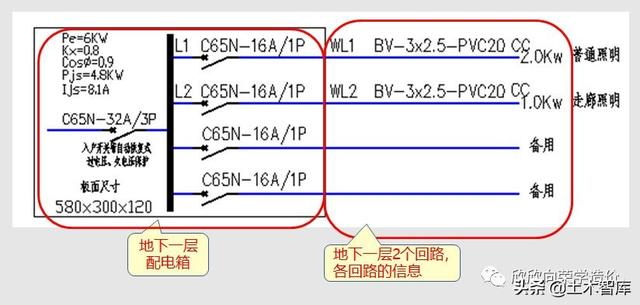
图17
1、配电箱尺寸（重点）
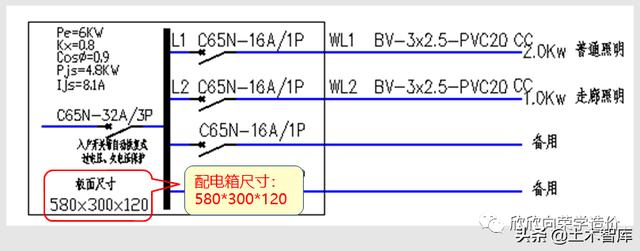
图18
580*300*120（长*高*厚）
2、设计指标
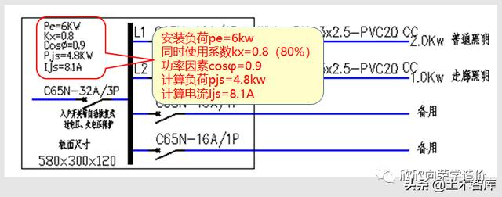
图19
安装负荷pe=6kw
同时使用系数kx=0.8（80％）
功率因素cosφ=0.9
计算负荷pjs=4.8kw
计算电流Ijs=8.1A
3、进线开关
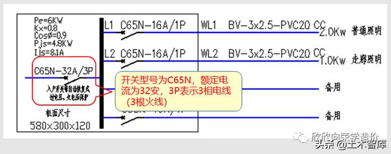
图20
开关型号为C65N，额定电流为32安，3P表示3相电线（3根火线）
4、出线开关
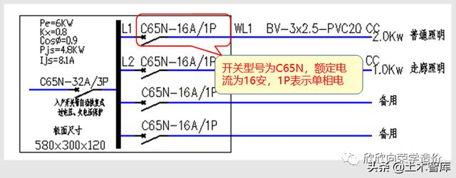
图21
开关型号为C65N，额定电流为16安，1P表示单相电
5、WL1回路信息（重点）
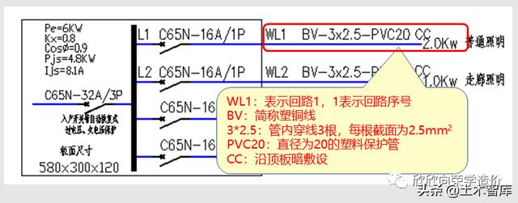
图22
WL1：表示回路1，1表示回路序号
BV：简称塑铜线
3*2.5：管内穿线3根，每根截面为2.5mm2
PVC20：直径为20的塑料保护管
CC：沿顶板暗敷设
6、WL2回路信息（重点
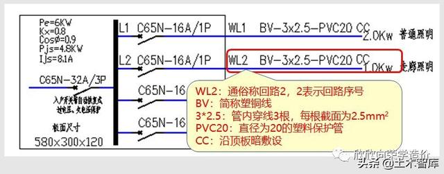
图23
WL2：通俗称回路2，2表示回路序号
BV：简称塑铜线
3*2.5：管内穿线3根，每根截面为2.5mm2
PVC20：直径为20的塑料保护管
CC：沿顶板暗敷设
回路的走向与接什么电气设备，就要详细看各层的平面图纸了，也不难。系统图是对这个工程的线路组成做到心中有数，大家平常可以多找找系统图看看